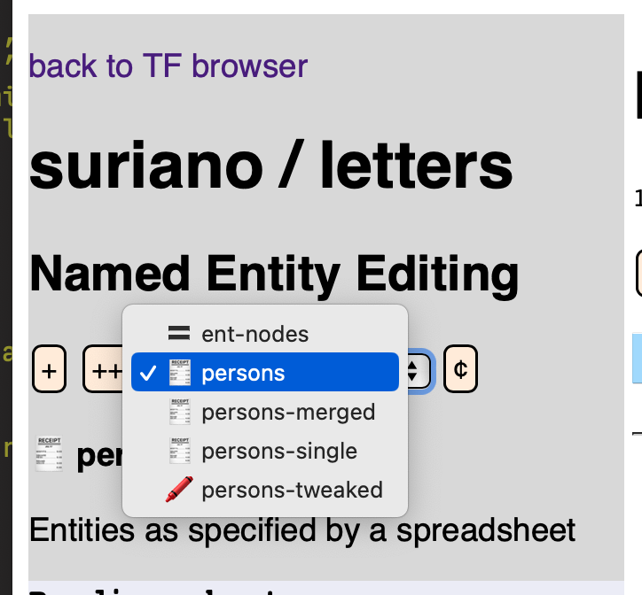

Module tf.ner.ner
Named Entity Recognition by Triggers.
As a preparation, read tf.about.annotate first, since it explains the concepts, and
guides you to set up the configuration for your corpus.
We explain here how to work with entity spreadsheets.
In a spreadsheet you can assign triggers to entities. Triggers are strings to search for in the corpus. You can limit the scope of these triggers to specific portions in the corpus.
The specification of the content and organization of such a entity sheet is in
Sheets.readSheetData().
You can place entity sheets in the directory ner/specs at the toplevel of the repo,
or, if you are not working from the repo, you can look up the corpus
under your text-fabric-data directory, and find a ner directory there.
The output data of the tool ends up in the _temp directory, which ends up next
to the ner directory.
For corpus designers
If you are a corpus designer, you can declare this ner directory as an extra
data module. Then it will packaged with the TF dataset of your corpus, and users
that use your corpus also get this directory, and can work with the NER tool
in the TF browser.
The way to declare this ner data module is by making sure that app/config.yaml
has this:
provenanceSpec:
...
extraData: ner
...
Additionally, you can create a file ner/config.yaml with some settings for the
NER process. See Settings.
You can also put a file code.py there in which you implement the function
normalizeChars(string): string
If you implement it, it will be invoked as a text transformation function upon
reading string data from spreadsheets.
The idea is that if the corpus is normalized for certain characters,
you can normalize the search terms and names in the spreadsheet in the
same way. For example, in the Suriano corpus, all incarnations of an
apostrophe, such as ’ or ' or ‘ have been normalized to ’.
But the spreadsheet might still use the unwanted the variants.
By providing a suitable function you can prevent that.
Starting up
In the TF browser
On the command line say:
tf org/repo --tool=ner
If you are at the top level of the repo, you can even say
tf --tool=ner
Then use the chooser at the top right of the interface to select an annotation set. There are three kinds of sets:
- = The (readonly) set of entities that are already baked in into the TF dataset;
- 🧾 (readonly) sets of entities defined by a spreadsheet;
- 🖍️ (mutable) sets of entities created manually by the user with the NER tool in the TF browser.

In a program
Import the relevant Python modules:
from tf.app import use
Load your corpus. There are two ways:
-
Work with a local GitHub clone of the corpus in
~/HuygensING/suriano:A = use("HuygensING/suriano:clone", checkout="clone") -
Or let TF auto-download the latest version and work with that:
A = use("HuygensING/suriano")
Load the Ner module:
NE = A.makeNer()
You can now load a spreadsheet by
NE.setTask(".people")
N.B.: The leading . in the name signifies that this set is coupled with a
spreadsheet.
Trigger investigations
We now assume that you are working with a program, ideally in a Jupyter notebook.
There are a few rule in trigger based entity search:
- the corpus is searched from beginning to end;
- if at some place in the corpus multiple triggers match, the longest match counts, and the others are discarded;
- if at some place, a trigger has matched, searching continues past the end of the match.
A consequence of these rules is that at no token in the corpus is part of a double match.
The idea behind this is that if you have two triggers, that the more specific trigger takes precedence above the lesser specific one.
However, the rules also have some pitfalls, which can lead to triggers that have unexpectedly no results, or less results than expected.
Here are a few caveats:
-
Overlapping triggers: if you have the following triggers:
the mayormayor of London
then the second one looks more specific than the first one. but if you have this passage in the corpus:
the mayor of Londonthen
mayor of Londonwill not be found. Because before it can be found,the mayorwill be found, after which searching continues atof London, and this does not match the triggermayor of London.The solution to cases like this is:
the mayoris a rather generic trigger, and it will only be valid in specific spots in the corpus.So add a scope to this trigger, and make sure that
the mayor of Londonis outside that scope.
When the entity spreadsheet is big, with over a thousand triggers for hundreds of names, it is difficult to keep track of all the tricky interactions between triggers.
For that reason we have a few diagnostic functions that help you to spot them:
-
Triggers.triggerInterference()will list the triggers belonging to different entities that overlap and for which there are occurrences where this overlap is problematic; -
Triggers.reportHits()will list the triggers without hits while they do occur in the corpus; it will give diagnostic info about those triggers; it also produces statistics about the inventory of entities that has been collected on the basis of the triggers; finally it produces a file that lists the number of hits per entity, per trigger, per scope and per section where the occurrences have been found.
Expand source code Browse git
"""Named Entity Recognition by Triggers.
As a preparation, read `tf.about.annotate` first, since it explains the concepts, and
guides you to set up the configuration for your corpus.
We explain here how to work with entity spreadsheets.
In a spreadsheet you can assign *triggers* to entities.
Triggers are strings to search for in the corpus.
You can limit the scope of these triggers to specific portions in the corpus.
The specification of the content and organization of such a entity sheet is in
`tf.ner.sheets.Sheets.readSheetData()`.
You can place entity sheets in the directory `ner/specs` at the toplevel of the repo,
or, if you are not working from the repo, you can look up the corpus
under your `text-fabric-data` directory, and find a `ner` directory there.
The output data of the tool ends up in the `_temp` directory, which ends up next
to the `ner` directory.
## For corpus designers
If you are a corpus designer, you can declare this `ner` directory as an extra
data module. Then it will packaged with the TF dataset of your corpus, and users
that use your corpus also get this directory, and can work with the NER tool
in the TF browser.
The way to declare this `ner` data module is by making sure that `app/config.yaml`
has this:
```
provenanceSpec:
...
extraData: ner
...
```
Additionally, you can create a file `ner/config.yaml` with some settings for the
NER process. See `tf.ner.settings.Settings`.
You can also put a file `code.py` there in which you implement the function
`normalizeChars(string): string`
If you implement it, it will be invoked as a text transformation function upon
reading string data from spreadsheets.
The idea is that if the corpus is normalized for certain characters,
you can normalize the search terms and names in the spreadsheet in the
same way. For example, in the Suriano corpus, all incarnations of an
apostrophe, such as `’` or `'` or `‘` have been normalized to `’`.
But the spreadsheet might still use the unwanted the variants.
By providing a suitable function you can prevent that.
## Starting up
### In the TF browser
On the command line say:
```
tf org/repo --tool=ner
```
If you are at the top level of the repo, you can even say
```
tf --tool=ner
```
Then use the chooser at the top right of the interface to select an annotation
set. There are three kinds of sets:
* **=** The (readonly) set of entities that are already baked in into the TF dataset;
* **🧾** (readonly) sets of entities defined by a spreadsheet;
* **🖍️** (mutable) sets of entities created manually by the user with the NER tool
in the TF browser.

### In a program
Import the relevant Python modules:
``` python
from tf.app import use
```
Load your corpus. There are two ways:
* Work with a local GitHub clone of the corpus in `~/HuygensING/suriano`:
A = use("HuygensING/suriano:clone", checkout="clone")
* Or let TF auto-download the latest version and work with that:
A = use("HuygensING/suriano")
Load the `Ner` module:
``` python
NE = A.makeNer()
```
You can now load a spreadsheet by
``` python
NE.setTask(".people")
```
**N.B.:** The leading `.` in the name signifies that this set is coupled with a
spreadsheet.
## Trigger investigations
We now assume that you are working with a program, ideally in a Jupyter notebook.
There are a few rule in trigger based entity search:
* the corpus is searched from beginning to end;
* if at some place in the corpus multiple triggers match, the longest match
counts, and the others are discarded;
* if at some place, a trigger has matched, searching continues past the end of
the match.
A consequence of these rules is that at no token in the corpus is part of a double
match.
The idea behind this is that if you have two triggers, that the more specific trigger
takes precedence above the lesser specific one.
However, the rules also have some pitfalls, which can lead to triggers that
have unexpectedly no results, or less results than expected.
Here are a few caveats:
* Overlapping triggers: if you have the following triggers:
* `the mayor`
* `mayor of London`
then the second one looks more specific than the first one. but if you have this
passage in the corpus:
`the mayor of London`
then `mayor of London` will not be found. Because before it can be found,
`the mayor` will be found, after which searching continues at `of London`, and
this does not match the trigger `mayor of London`.
The solution to cases like this is: `the mayor` is a rather generic trigger, and
it will only be valid in specific spots in the corpus.
So add a scope to this trigger, and make sure that `the mayor of London` is outside
that scope.
When the entity spreadsheet is big, with over a thousand triggers for hundreds of names,
it is difficult to keep track of all the tricky interactions between triggers.
For that reason we have a few diagnostic functions that help you to spot them:
* `tf.ner.triggers.Triggers.triggerInterference()` will list the triggers belonging to
different entities that overlap and for which there are occurrences where this
overlap is problematic;
* `tf.ner.triggers.Triggers.reportHits()` will list the triggers without hits
while they do occur in the corpus; it will give diagnostic info about those
triggers; it also produces statistics about the inventory of entities that
has been collected on the basis of the triggers; finally it produces a file
that lists the number of hits per entity, per trigger, per scope and per
section where the occurrences have been found.
"""
from itertools import chain
from ..dataset import modify
from ..core.generic import AttrDict
from ..core.helpers import console
from ..core.timestamp import SILENT_D, DEEP
from ..core.files import fileOpen, dirRemove, dirNm, dirExists, APP_CONFIG
from .sets import Sets
from .sheets import Sheets
from .show import Show
from .variants import Detect
class NER(Sheets, Sets, Show):
"""API for Named Entity marking.
This class is the central class of the trigger based Named Entity
Recognition tool whose main task is to find occurrences of annotations on
the basis of criteria.
This class inherits from a number of other classes:
* `tf.ner.sheets`: manage annotation spreadsheets;
* `tf.ner.sets`: manage annotation sets;
* `tf.ner.show`: generate HTML for annotated buckets of the corpus;
In turn, these classes inherit from yet other classes:
* `tf.ner.sets`:
* from `tf.ner.data`: manage the annotation data in various
convenient representations;
* `tf.ner.data`:
* from `tf.ner.corpus`: manage the corpus dependent bits; it uses
the TF machinery to extract the specifics of the corpus;
* `tf.ner.corpus`:
* from `tf.ner.settings`: additional settings, some of which
derive from a config file;
* `tf.ner.sheets`:
* from `tf.ner.scopes`: support the concept of scope in the corpus;
* from `tf.ner.triggers`: support the concept of trigger.
The NER machinery can be used by
* users to manipulate annotations in their own programs, especially in a
Jupyter notebook.
* `tf.browser.ner.web`: Flask app that routes URLs to controller functions.
The browsing experience is supported by:
* `tf.browser.ner.web`: map urls to the controllers of the web app
* `tf.browser.ner.serve`: implement the controllers of the web app
* `tf.browser.ner.request`: manage the data of a request;
* `tf.browser.ner.form`: retrieve form values into typed and structured values.
* `tf.browser.ner.fragments`: generate HTML for widgets on the page;
* `tf.browser.ner.websettings`: settings for the browser experience;
* `tf.browser.html`: a generic library to generate HTML using Pythonic syntax.
See this
[example notebook](https://nbviewer.org/urls/gitlab.huc.knaw.nl/suriano/letters/-/raw/main/programs/ner.ipynb/%3Fref_type%3Dheads%26inline%3Dfalse).
"""
def __init__(
self,
app,
data=None,
browse=False,
caseSensitive=False,
silent=False,
):
"""Top level functions for entity annotation.
This is a high-level class, building on the lower-level tools provided
by the Sheets, Sets and Show classes on which it is based and on the classes
that these are based on in turn.
These methods can be used by code that runs in the TF browser
and by code that runs in a Jupyter notebook.
Entities are collected in sets. There are three kind of sets:
* entities that are already part of the TF data as nodes and features; this
is a *readonly* set. However, you can duplicate it, and the copy is a
modifiable set;
* entities that have been looked up on the basis of triggers specified in a
spreadsheet; these are also *readonly* sets, and also these can be
duplicated in modifiable sets;
* entities that have been found by hand; these are *modifiable* sets.
The concept of entity *task* stands for entity sets, of all three kinds.
In shorthand, we say a task is either a set, or a sheet, or the given
entity set.
Underneath, the given entity set looks like a set, but in fact there is
no other representation of them than the nodes and features that are already
in the TF dataset.
Sheets have corresponding sets, but there is a bit of logic around sheets
that prevent the set from being modified, among other things.
Sets are the lowest level of data corresponding to entities.
This class handles *tasks*, which is an abstraction of the three concepts of
entity collections.
It does not handle HTML generation, but its parent class, `Show`, does that.
We consider the corpus as a list of buckets (lowest level sectional
units; in TEI-derived corpora called `chunk`, being generalizations of
`p` (paragraph) elements). We read this type off from the TF dataset,
see `tf.ner.corpus.Corpus.bucketType`
Parameters
----------
app: object
The object that corresponds to a loaded TF app for a corpus.
data: object, optional None
Entity data to start with. If this class is initialized by the browser,
the browser hands over the in-memory data that the tool needs.
That way, it can maintain access to the same data between requests.
If None, no data is handed over, and a fresh data store will be
created by an ancestor class (Data)
browse: boolean, optional False
If True, the object is informed that it is run by the TF browser.
This will influence how results are reported back.
caseSensitive: boolean, optional False
Whether the lookup of entities should be case-sensitive. For spreadsheets
it specifies whether the triggers should be treated case-sensitively.
silent: boolean, optional False
Whether to keep most operations silent.
"""
if data is None:
data = AttrDict()
if data.sets is None:
data.sets = AttrDict()
if data.sheets is None:
data.sheets = AttrDict()
self.silent = silent
self.browse = browse
self.app = app
self.caseSensitive = caseSensitive
Sets.__init__(self, sets=data.sets)
if not self.properlySetup:
return
Sheets.__init__(self, sheets=data.sheets)
if not self.properlySetup:
return
def setTask(self, task, force=False, caseSensitive=None):
"""Switch to a named NER task.
After the switch, the data associated with this task will be looked up
from disk if it is not already in memory. If no data can be found, the data will
be generated and stored.
Parameters
----------
task: string
The name of the NER task to switch to.
force: boolean, optional False
If True, the data for this task will be generated from scratch, bypassing
earlier stored data.
caseSenstive: boolean, optional None
Whether to use the triggers of sheets in a case-sensitive way.
If `None`, the value is taken from the NER instance, otherwise you can
override it here.
**N.B.:** Case sensitivity is only relevant for sheets. When the task is
a sheet, it is associated with potentially two *sets*, one for the sheet
taken in a case-sensitive way, and one for the sheet taken in a
case-insensitive way.
"""
if caseSensitive is None:
caseSensitive = self.caseSensitive
(newSetNameRep, newSetRo, newSetSrc, newSetX) = self.setInfo(task)
self.setSet(task)
self.setSheet(
task[1:] if newSetX else None,
force=force,
caseSensitive=caseSensitive,
)
def getTasks(self):
"""Get a list of task names.
Sheets will be listed by just their main name, although they are associated
with two sets, due to the optional case sensitivity.
"""
setNames = self.setNames
tasks = set()
for setName in setNames:
tasks.add(
setName.removesuffix("-no-case").removesuffix("-with-case")
if setName.startswith(".")
else setName
)
return tasks
def bakeEntities(self, versionExtension="e"):
"""Consolidates the current entities as nodes into a new TF data source.
This operation is not allowed if the current set is the read-only set with the
empty name, because these entities are already present as nodes in the
TF dataset.
Entities and entity occurrences are stored as nodes of type `entity` and `ent`
respectively.
Nodes of both types will get the features `eid` (entity id) and `kind` (type
of entity, e.g. `PER`, `LOC`).
Additionally, nodes of type `entity` will also get the feature `ename`: the
full name of the entity. But this can be done only if the set of entities
belongs to a spreadsheet.
There will also be an edge feature `eoccs` that goes from `entity` nddes to
the `ent` nodes that correspond to their occurrences.
`entity` nodes will also be linked to all slots occupied by their occurrences.
Parameters
----------
versionExtension: string, optional "e"
The new dataset gets a version like the original dataset, but extended
with this string.
"""
if not self.properlySetup:
return
silent = self.silent
setNameRep = self.setNameRep
setIsSrc = self.setIsSrc
setIsX = self.setIsX
if setIsSrc:
console(f"Entity consolidation not meaningful on {setNameRep}", error=True)
return False
version = self.version
settings = self.settings
features = settings.features
featureMeta = settings.featureMeta
setData = self.getSetData()
slotLink = {}
nodeFeatures = AttrDict({feat: {} for feat in features})
edgeFeatures = AttrDict(eoccs={})
entities = {}
if setIsX:
sheetData = self.getSheetData()
nameMap = sheetData.nameMap
eNameFeature = settings.eNameFeature
eNameFeat = list(eNameFeature)[0]
featureMeta[eNameFeat] = eNameFeature[eNameFeat]
nodeFeatures[eNameFeat] = {}
# Data preparation for the modify function
entityOccs = sorted(set(setData.entities.values()))
self.console(
f"Entity consolidation for {len(entityOccs)} entity occurrences "
f"into version {version}{versionExtension}"
)
n = 0
for fVals, slots in entityOccs:
n += 1
slotLink[n] = slots
for feat, fVal in zip(features, fVals):
nodeFeatures[feat][n] = fVal
entities.setdefault(fVals, []).append(n)
nEntityOccs = len(entityOccs)
occEdge = edgeFeatures.eoccs
for fVals, occs in entities.items():
n += 1
occEdge[n] = set(occs)
slotLink[n] = tuple(chain.from_iterable(slotLink[m] for m in occs))
for feat, fVal in zip(features, fVals):
nodeFeatures[feat][n] = fVal
if setIsX:
eName = nameMap[fVals]
nodeFeatures[eNameFeat][n] = eName
nEntities = len(entities)
self.console(f"{nEntityOccs:>6} entity occurrences")
self.console(f"{nEntities:>6} distinct entities")
featureMeta.eoccs = dict(
valueType="str",
description="from entity nodes to their occurrence nodes",
)
addTypes = dict(
ent=dict(
nodeFrom=1,
nodeTo=nEntityOccs,
nodeSlots=slotLink,
nodeFeatures=nodeFeatures,
),
entity=dict(
nodeFrom=nEntityOccs + 1,
nodeTo=nEntityOccs + nEntities,
nodeSlots=slotLink,
nodeFeatures=nodeFeatures,
edgeFeatures=edgeFeatures,
),
)
self.featureMeta = featureMeta
# Call the modify function
app = self.app
context = app.context
appPath = context.appPath
relative = context.relative
dataPath = f"{dirNm(appPath)}/{relative}"
origTf = f"{dataPath}/{app.version}"
newTf = f"{origTf}{versionExtension}"
newVersion = f"{app.version}{versionExtension}"
if dirExists(newTf):
dirRemove(newTf)
app.indent(reset=True)
if not silent:
app.info("Creating a dataset with entity nodes ...")
good = modify(
origTf,
newTf,
targetVersion=newVersion,
addTypes=addTypes,
featureMeta=featureMeta,
silent=DEEP if silent else SILENT_D,
)
if not silent:
app.info("Done")
if not good:
return False
self.console(f"The dataset with entities is now in version {newVersion}")
# tweak the app
config = f"{appPath}/{APP_CONFIG}"
with fileOpen(config) as fh:
text = fh.read()
text = text.replace(f"version: {version}", f'version: "{newVersion}"')
text = text.replace(f'version: "{version}"', f'version: "{newVersion}"')
with fileOpen(config, mode="w") as fh:
fh.write(text)
self.console("The dataset with entities is now the standard version")
return True
def variantDetection(self):
setIsX = self.setIsX
if not setIsX:
console("You can only do variant analysis on sheets", error=True)
return None
return Detect(self)Classes
class NER (app, data=None, browse=False, caseSensitive=False, silent=False)-
API for Named Entity marking.
This class is the central class of the trigger based Named Entity Recognition tool whose main task is to find occurrences of annotations on the basis of criteria.
This class inherits from a number of other classes:
tf.ner.sheets: manage annotation spreadsheets;tf.ner.sets: manage annotation sets;tf.ner.show: generate HTML for annotated buckets of the corpus;
In turn, these classes inherit from yet other classes:
tf.ner.sets:- from
tf.ner.data: manage the annotation data in various convenient representations;
- from
tf.ner.data:- from
tf.ner.corpus: manage the corpus dependent bits; it uses the TF machinery to extract the specifics of the corpus;
- from
tf.ner.corpus:- from
tf.ner.settings: additional settings, some of which derive from a config file;
- from
tf.ner.sheets:- from
tf.ner.scopes: support the concept of scope in the corpus; - from
tf.ner.triggers: support the concept of trigger.
- from
The NER machinery can be used by
- users to manipulate annotations in their own programs, especially in a Jupyter notebook.
tf.browser.ner.web: Flask app that routes URLs to controller functions.
The browsing experience is supported by:
tf.browser.ner.web: map urls to the controllers of the web apptf.browser.ner.serve: implement the controllers of the web apptf.browser.ner.request: manage the data of a request;tf.browser.ner.form: retrieve form values into typed and structured values.tf.browser.ner.fragments: generate HTML for widgets on the page;tf.browser.ner.websettings: settings for the browser experience;tf.browser.html: a generic library to generate HTML using Pythonic syntax.
See this example notebook.
Top level functions for entity annotation.
This is a high-level class, building on the lower-level tools provided by the Sheets, Sets and Show classes on which it is based and on the classes that these are based on in turn.
These methods can be used by code that runs in the TF browser and by code that runs in a Jupyter notebook.
Entities are collected in sets. There are three kind of sets:
-
entities that are already part of the TF data as nodes and features; this is a readonly set. However, you can duplicate it, and the copy is a modifiable set;
-
entities that have been looked up on the basis of triggers specified in a spreadsheet; these are also readonly sets, and also these can be duplicated in modifiable sets;
-
entities that have been found by hand; these are modifiable sets.
The concept of entity task stands for entity sets, of all three kinds. In shorthand, we say a task is either a set, or a sheet, or the given entity set.
Underneath, the given entity set looks like a set, but in fact there is no other representation of them than the nodes and features that are already in the TF dataset.
Sheets have corresponding sets, but there is a bit of logic around sheets that prevent the set from being modified, among other things.
Sets are the lowest level of data corresponding to entities.
This class handles tasks, which is an abstraction of the three concepts of entity collections.
It does not handle HTML generation, but its parent class,
Show, does that.We consider the corpus as a list of buckets (lowest level sectional units; in TEI-derived corpora called
chunk, being generalizations ofp(paragraph) elements). We read this type off from the TF dataset, seeCorpus.bucketTypeParameters
app:object- The object that corresponds to a loaded TF app for a corpus.
data:object, optionalNone- Entity data to start with. If this class is initialized by the browser, the browser hands over the in-memory data that the tool needs. That way, it can maintain access to the same data between requests. If None, no data is handed over, and a fresh data store will be created by an ancestor class (Data)
browse:boolean, optionalFalse- If True, the object is informed that it is run by the TF browser. This will influence how results are reported back.
caseSensitive:boolean, optionalFalse- Whether the lookup of entities should be case-sensitive. For spreadsheets it specifies whether the triggers should be treated case-sensitively.
silent:boolean, optionalFalse- Whether to keep most operations silent.
Expand source code Browse git
class NER(Sheets, Sets, Show): """API for Named Entity marking. This class is the central class of the trigger based Named Entity Recognition tool whose main task is to find occurrences of annotations on the basis of criteria. This class inherits from a number of other classes: * `tf.ner.sheets`: manage annotation spreadsheets; * `tf.ner.sets`: manage annotation sets; * `tf.ner.show`: generate HTML for annotated buckets of the corpus; In turn, these classes inherit from yet other classes: * `tf.ner.sets`: * from `tf.ner.data`: manage the annotation data in various convenient representations; * `tf.ner.data`: * from `tf.ner.corpus`: manage the corpus dependent bits; it uses the TF machinery to extract the specifics of the corpus; * `tf.ner.corpus`: * from `tf.ner.settings`: additional settings, some of which derive from a config file; * `tf.ner.sheets`: * from `tf.ner.scopes`: support the concept of scope in the corpus; * from `tf.ner.triggers`: support the concept of trigger. The NER machinery can be used by * users to manipulate annotations in their own programs, especially in a Jupyter notebook. * `tf.browser.ner.web`: Flask app that routes URLs to controller functions. The browsing experience is supported by: * `tf.browser.ner.web`: map urls to the controllers of the web app * `tf.browser.ner.serve`: implement the controllers of the web app * `tf.browser.ner.request`: manage the data of a request; * `tf.browser.ner.form`: retrieve form values into typed and structured values. * `tf.browser.ner.fragments`: generate HTML for widgets on the page; * `tf.browser.ner.websettings`: settings for the browser experience; * `tf.browser.html`: a generic library to generate HTML using Pythonic syntax. See this [example notebook](https://nbviewer.org/urls/gitlab.huc.knaw.nl/suriano/letters/-/raw/main/programs/ner.ipynb/%3Fref_type%3Dheads%26inline%3Dfalse). """ def __init__( self, app, data=None, browse=False, caseSensitive=False, silent=False, ): """Top level functions for entity annotation. This is a high-level class, building on the lower-level tools provided by the Sheets, Sets and Show classes on which it is based and on the classes that these are based on in turn. These methods can be used by code that runs in the TF browser and by code that runs in a Jupyter notebook. Entities are collected in sets. There are three kind of sets: * entities that are already part of the TF data as nodes and features; this is a *readonly* set. However, you can duplicate it, and the copy is a modifiable set; * entities that have been looked up on the basis of triggers specified in a spreadsheet; these are also *readonly* sets, and also these can be duplicated in modifiable sets; * entities that have been found by hand; these are *modifiable* sets. The concept of entity *task* stands for entity sets, of all three kinds. In shorthand, we say a task is either a set, or a sheet, or the given entity set. Underneath, the given entity set looks like a set, but in fact there is no other representation of them than the nodes and features that are already in the TF dataset. Sheets have corresponding sets, but there is a bit of logic around sheets that prevent the set from being modified, among other things. Sets are the lowest level of data corresponding to entities. This class handles *tasks*, which is an abstraction of the three concepts of entity collections. It does not handle HTML generation, but its parent class, `Show`, does that. We consider the corpus as a list of buckets (lowest level sectional units; in TEI-derived corpora called `chunk`, being generalizations of `p` (paragraph) elements). We read this type off from the TF dataset, see `tf.ner.corpus.Corpus.bucketType` Parameters ---------- app: object The object that corresponds to a loaded TF app for a corpus. data: object, optional None Entity data to start with. If this class is initialized by the browser, the browser hands over the in-memory data that the tool needs. That way, it can maintain access to the same data between requests. If None, no data is handed over, and a fresh data store will be created by an ancestor class (Data) browse: boolean, optional False If True, the object is informed that it is run by the TF browser. This will influence how results are reported back. caseSensitive: boolean, optional False Whether the lookup of entities should be case-sensitive. For spreadsheets it specifies whether the triggers should be treated case-sensitively. silent: boolean, optional False Whether to keep most operations silent. """ if data is None: data = AttrDict() if data.sets is None: data.sets = AttrDict() if data.sheets is None: data.sheets = AttrDict() self.silent = silent self.browse = browse self.app = app self.caseSensitive = caseSensitive Sets.__init__(self, sets=data.sets) if not self.properlySetup: return Sheets.__init__(self, sheets=data.sheets) if not self.properlySetup: return def setTask(self, task, force=False, caseSensitive=None): """Switch to a named NER task. After the switch, the data associated with this task will be looked up from disk if it is not already in memory. If no data can be found, the data will be generated and stored. Parameters ---------- task: string The name of the NER task to switch to. force: boolean, optional False If True, the data for this task will be generated from scratch, bypassing earlier stored data. caseSenstive: boolean, optional None Whether to use the triggers of sheets in a case-sensitive way. If `None`, the value is taken from the NER instance, otherwise you can override it here. **N.B.:** Case sensitivity is only relevant for sheets. When the task is a sheet, it is associated with potentially two *sets*, one for the sheet taken in a case-sensitive way, and one for the sheet taken in a case-insensitive way. """ if caseSensitive is None: caseSensitive = self.caseSensitive (newSetNameRep, newSetRo, newSetSrc, newSetX) = self.setInfo(task) self.setSet(task) self.setSheet( task[1:] if newSetX else None, force=force, caseSensitive=caseSensitive, ) def getTasks(self): """Get a list of task names. Sheets will be listed by just their main name, although they are associated with two sets, due to the optional case sensitivity. """ setNames = self.setNames tasks = set() for setName in setNames: tasks.add( setName.removesuffix("-no-case").removesuffix("-with-case") if setName.startswith(".") else setName ) return tasks def bakeEntities(self, versionExtension="e"): """Consolidates the current entities as nodes into a new TF data source. This operation is not allowed if the current set is the read-only set with the empty name, because these entities are already present as nodes in the TF dataset. Entities and entity occurrences are stored as nodes of type `entity` and `ent` respectively. Nodes of both types will get the features `eid` (entity id) and `kind` (type of entity, e.g. `PER`, `LOC`). Additionally, nodes of type `entity` will also get the feature `ename`: the full name of the entity. But this can be done only if the set of entities belongs to a spreadsheet. There will also be an edge feature `eoccs` that goes from `entity` nddes to the `ent` nodes that correspond to their occurrences. `entity` nodes will also be linked to all slots occupied by their occurrences. Parameters ---------- versionExtension: string, optional "e" The new dataset gets a version like the original dataset, but extended with this string. """ if not self.properlySetup: return silent = self.silent setNameRep = self.setNameRep setIsSrc = self.setIsSrc setIsX = self.setIsX if setIsSrc: console(f"Entity consolidation not meaningful on {setNameRep}", error=True) return False version = self.version settings = self.settings features = settings.features featureMeta = settings.featureMeta setData = self.getSetData() slotLink = {} nodeFeatures = AttrDict({feat: {} for feat in features}) edgeFeatures = AttrDict(eoccs={}) entities = {} if setIsX: sheetData = self.getSheetData() nameMap = sheetData.nameMap eNameFeature = settings.eNameFeature eNameFeat = list(eNameFeature)[0] featureMeta[eNameFeat] = eNameFeature[eNameFeat] nodeFeatures[eNameFeat] = {} # Data preparation for the modify function entityOccs = sorted(set(setData.entities.values())) self.console( f"Entity consolidation for {len(entityOccs)} entity occurrences " f"into version {version}{versionExtension}" ) n = 0 for fVals, slots in entityOccs: n += 1 slotLink[n] = slots for feat, fVal in zip(features, fVals): nodeFeatures[feat][n] = fVal entities.setdefault(fVals, []).append(n) nEntityOccs = len(entityOccs) occEdge = edgeFeatures.eoccs for fVals, occs in entities.items(): n += 1 occEdge[n] = set(occs) slotLink[n] = tuple(chain.from_iterable(slotLink[m] for m in occs)) for feat, fVal in zip(features, fVals): nodeFeatures[feat][n] = fVal if setIsX: eName = nameMap[fVals] nodeFeatures[eNameFeat][n] = eName nEntities = len(entities) self.console(f"{nEntityOccs:>6} entity occurrences") self.console(f"{nEntities:>6} distinct entities") featureMeta.eoccs = dict( valueType="str", description="from entity nodes to their occurrence nodes", ) addTypes = dict( ent=dict( nodeFrom=1, nodeTo=nEntityOccs, nodeSlots=slotLink, nodeFeatures=nodeFeatures, ), entity=dict( nodeFrom=nEntityOccs + 1, nodeTo=nEntityOccs + nEntities, nodeSlots=slotLink, nodeFeatures=nodeFeatures, edgeFeatures=edgeFeatures, ), ) self.featureMeta = featureMeta # Call the modify function app = self.app context = app.context appPath = context.appPath relative = context.relative dataPath = f"{dirNm(appPath)}/{relative}" origTf = f"{dataPath}/{app.version}" newTf = f"{origTf}{versionExtension}" newVersion = f"{app.version}{versionExtension}" if dirExists(newTf): dirRemove(newTf) app.indent(reset=True) if not silent: app.info("Creating a dataset with entity nodes ...") good = modify( origTf, newTf, targetVersion=newVersion, addTypes=addTypes, featureMeta=featureMeta, silent=DEEP if silent else SILENT_D, ) if not silent: app.info("Done") if not good: return False self.console(f"The dataset with entities is now in version {newVersion}") # tweak the app config = f"{appPath}/{APP_CONFIG}" with fileOpen(config) as fh: text = fh.read() text = text.replace(f"version: {version}", f'version: "{newVersion}"') text = text.replace(f'version: "{version}"', f'version: "{newVersion}"') with fileOpen(config, mode="w") as fh: fh.write(text) self.console("The dataset with entities is now the standard version") return True def variantDetection(self): setIsX = self.setIsX if not setIsX: console("You can only do variant analysis on sheets", error=True) return None return Detect(self)Ancestors
Methods
def bakeEntities(self, versionExtension='e')-
Consolidates the current entities as nodes into a new TF data source.
This operation is not allowed if the current set is the read-only set with the empty name, because these entities are already present as nodes in the TF dataset.
Entities and entity occurrences are stored as nodes of type
entityandentrespectively.Nodes of both types will get the features
eid(entity id) andkind(type of entity, e.g.PER,LOC).Additionally, nodes of type
entitywill also get the featureename: the full name of the entity. But this can be done only if the set of entities belongs to a spreadsheet.There will also be an edge feature
eoccsthat goes fromentitynddes to theentnodes that correspond to their occurrences.entitynodes will also be linked to all slots occupied by their occurrences.Parameters
versionExtension:string, optional"e"- The new dataset gets a version like the original dataset, but extended with this string.
def getTasks(self)-
Get a list of task names.
Sheets will be listed by just their main name, although they are associated with two sets, due to the optional case sensitivity.
def setTask(self, task, force=False, caseSensitive=None)-
Switch to a named NER task.
After the switch, the data associated with this task will be looked up from disk if it is not already in memory. If no data can be found, the data will be generated and stored.
Parameters
task:string- The name of the NER task to switch to.
force:boolean, optionalFalse- If True, the data for this task will be generated from scratch, bypassing earlier stored data.
caseSenstive:boolean, optionalNone-
Whether to use the triggers of sheets in a case-sensitive way. If
None, the value is taken from the NER instance, otherwise you can override it here.N.B.: Case sensitivity is only relevant for sheets. When the task is a sheet, it is associated with potentially two sets, one for the sheet taken in a case-sensitive way, and one for the sheet taken in a case-insensitive way.
def variantDetection(self)
Inherited members
Sheets:diagnoseTriggerdiagnoseTriggersfindOccsfindTriggerfindTriggersflushgetMetagetSheetDatagetToTokensFuncinterferenceintersectScopesloadSheetDatalogmakeSheetOfSingleTokensparseIntervalparseLocparseScopepartitionTriggersreadSheetDatareadSheetsrepIntervalrepLocrepScopereportHitssetSheetsheetNamesheetNamestestPartitioningtriggerInterferencewriteSheetData
Sets:addEntitiesaddEntityaddEntityRichbucketTypecheckBucketscheckFeatureconsoleconsoleLinedelEntitydelEntityRichfeatureDefaultfilterContentfromSourceSetfvalFromNodegetAftergetBucketNodesgetContextgetEidgetEntityNodesgetKindgetSeqFromNodegetSeqFromStrgetSetDatagetStrgetStrFromSeqloadSetDataprocessSetproperlySetupreadSetsresetSetsaveEntitiesAssectionHeadsetDelsetDupsetInfosetMovesetNamesetNamessetSetslotTypeslotsFromNodestringsFromTokenstextFromNodetextFromSlotstokensFromNode
Show: